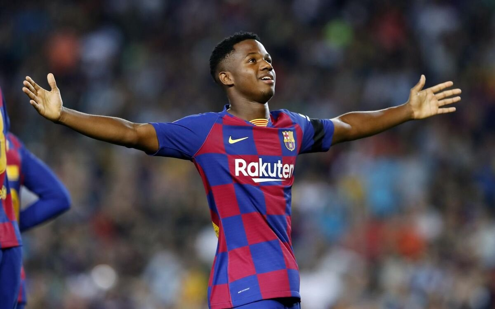
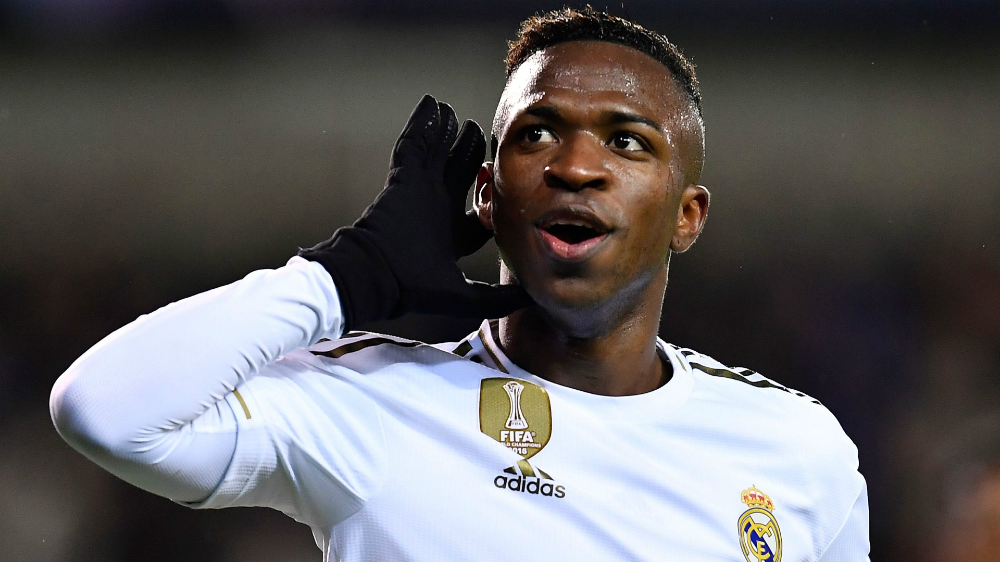

En el futbol base del Barcelona marcan un punto de inflexion en la relacion de los canteranos cuando se convierten en cadetes. "Solo tiene que prestar atencion a las tribunas. Cuando son benjamines o alevines, los padres de todos los niños siempre estan juntos. Pero despues todo empieza a cambiar. Hay grupitos, hay celos... la competencia. Es lo que tiene el futbol profesional", explica Aureli Altimira, excoordinador de futbol 11 en la cantera azulgrana.

Vinicius de Olivera Junior (Brasil, 2000) es un jugador profesional de futbol- Se formo en las categorias inferioes del Flamengo y actualmente juega como delantero en el Real Madrid C.F. Ha ganado una Liga y un Mundial de Clubes con este equipo, y posee dos Campeonatos Sudamericanos con las selecciones brasileñas sub-15 y sub-17. Sigue todas las noticias de Vinicius Jr.